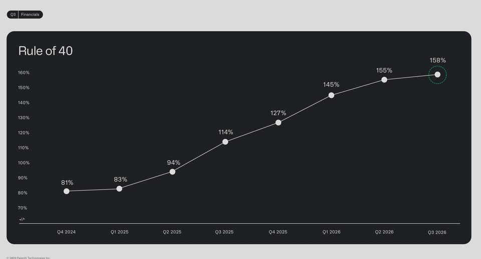

過去 26 小時共 3 則。重點是 #6525、#6526 兩則 Palantir（PLTR）2026 Q3 財報與法說會的筆記：營收年增 96%、美國商業營收首度超過美國政府，以及「小模型打敗大模型」的論述。#6527 是一段影片，腳本只抓到縮圖。
pltr 26q3
收尾直接感謝散戶，並說要讓 "嘲笑你們和我們的人受苦"。此外提到小模型在滿多案例上勝過大模型表現，且絕大多數具有經濟價值的問題用前沿模型以下的就能破解
- Sovereign AI 上線一季就把美國商業部門推成公司最大引擎，公司定調讓模型商把市場做大、Palantir 收割落地需求
- 營收 23.13 億美元，yoy 96%，單季首破 20 億。其中美國營收 19.37 億，yoy 119%，佔總營收 84%。美國商業 9.84 億，yoy 148%，首超美國政府（9.53 億，yoy 96%）
- 前 20 大客戶 TTM 平均貢獻 1.46 億，yoy 76%；美國商業客戶數 686，qoq 5%
- guide 全年營收上修至 85.3 億，yoy 91%
- 小模型打大模型的案例密集出現，L3Harris 用自有資料微調開源模型，48 小時內超越原本用的前沿模型，成本降 95%
- NVIDIA 把自家最小模型後訓練到大幅超越最大模型，單張 GPU 幾小時就能重訓
- PACOM 演習部署 300 億參數後訓練模型，任務表現勝過 3 兆參數的 GPT 5.6 Sol
- 大多數有經濟價值的問題用前沿以下的智能就能解
- 成功客戶的共同點是野心，失敗客戶多半只想砍 opex
- 以前從接觸到 pilot 再拉長鎖定，現在在 Sovereign bootcamp 裡直接買，起步規模從 25 萬美元變 2500 萬美元，合約變短、擴張變快
- Karp 說 Anthropic 在幫忙賣 Palantir，雙方是共生，Anthropic S1 第 209 頁講的 AIG 商業保險核保案，整個流程跑在 AIP 上
- Palantir 的論述與超大規模雲、模型商的資本支出敘事相反。價值不在算力與參數規模，在企業內部資料迴圈與工作流

#6526 是 Palantir Q3 簡報的「Rule of 40」折線圖：Q4 2024 81% → Q1 2025 83% → Q2 2025 94% → Q3 2025 114% → Q4 2025 127% → Q1 2026 145% → Q2 2026 155% → Q3 2026 158%，連續七季上升，但最近一季的增幅明顯放緩（+3 個百分點）。
講解
數字核對。貼文的財報數字與媒體報導一致：營收 23.1 億美元（年增 96%）、美國商業 9.84 億（年增 148%）、美國政府 9.53 億（年增 96%），全年營收指引上修至 85.30–85.34 億（約年增 91%）。法說逐字稿也確認前 20 大客戶 TTM 平均 1.46 億（年增 76%）、美國商業客戶 686 家（季增 5%，年增 29%）。另外貼文沒提到：調整後 EPS 0.44 美元，高於預期的 0.41；美國商業全年指引至少 35.59 億（年增 ≥143%）；Q4 營收指引約 26.5 億。
Rule of 40 是什麼。這是 SaaS 業界的經驗法則：營收成長率＋利潤率（Palantir 用調整後營業利益率）≥ 40% 就算健康。Palantir 做到 158%，以年增 96% 反推，調整後營業利益率約 62%（這是我依公式推算，非原貼文數字）。高成長和高利潤同時成立在大型軟體公司很少見，這是市場給它極高估值的核心理由。
「小模型打大模型」在講什麼。這一段是 Palantir 主管（主要是 Shyam Sankar 與 Ryan Taylor）在法說會上舉的客戶案例：拿開源模型、用企業自己的資料做微調或後訓練（post-training），在特定任務上贏過通用的前沿大模型，而且成本大幅降低。要注意幾點：(1) 這些都是 Palantir 自己轉述、多為「初步結果」（L3Harris 的 95% 是 preliminary），沒有獨立驗證；(2) 「勝過」指的是特定任務表現，不是通用能力全面超越；(3) 「大多數有經濟價值的問題用前沿以下的智能就能解」是公司的論點與推論，不是已證實的事實。貼文最後一點把它和超大規模雲業者的資本支出敘事對立起來，邏輯是：若價值在企業資料與工作流（Palantir 的 Ontology／AIP 平台），而非模型本身的參數規模，那麼瓶頸和利潤就會移到應用與資料整合層。這是 Palantir 的自利敘事，未必代表模型商或雲端業者的需求會放緩。
Sovereign AI bootcamp。Palantir 的銷售手法是「bootcamp」：幾天內用客戶自己的資料做出可用的工作流，讓客戶當場決定是否採購。Karp 說起步合約從約 25 萬美元變成約 2500 萬美元，合約期縮短但擴張更快。分析師在法說上也追問了 bootcamp 的轉換率，代表市場關心這種成長能否持續。
Anthropic 與 AIG。Sankar 引用 Anthropic S-1 第 209 頁 AIG 自動化商業保險核保的案例，說該流程建在 AIP 上。這是 Palantir 的說法；S-1 原文是否寫明 Palantir，我沒能取得原文核對。貼文說「Karp 說」，但逐字稿報導中引用 S-1 的是 Sankar，屬小出入。
散戶與「讓嘲笑的人受苦」。Karp 確實在收尾感謝早期（多為散戶）股東，並說要確保嘲笑你們和我們的人「suffering」，與貼文一致。
市場反應與反面觀點。財報全面超預期，但股價當天正常盤收 178.44 美元（-3.1%），盤後再跌約 3.8%。媒體歸因於估值過高、好消息已反映在股價；其他被提到的風險包括對 Sovereign AI 需求的依賴、產能限制、高成長與高利潤能否持續。
是影片，腳本只抓到縮圖，沒有文字說明，請自行開 App 查看。
縮圖是一段舊式錄影畫質的畫面：股市交易廳裡的紅色 LED 行情看板（中文股名與報價），前景有幾位民眾在看盤。內容與用意無法從縮圖判斷。